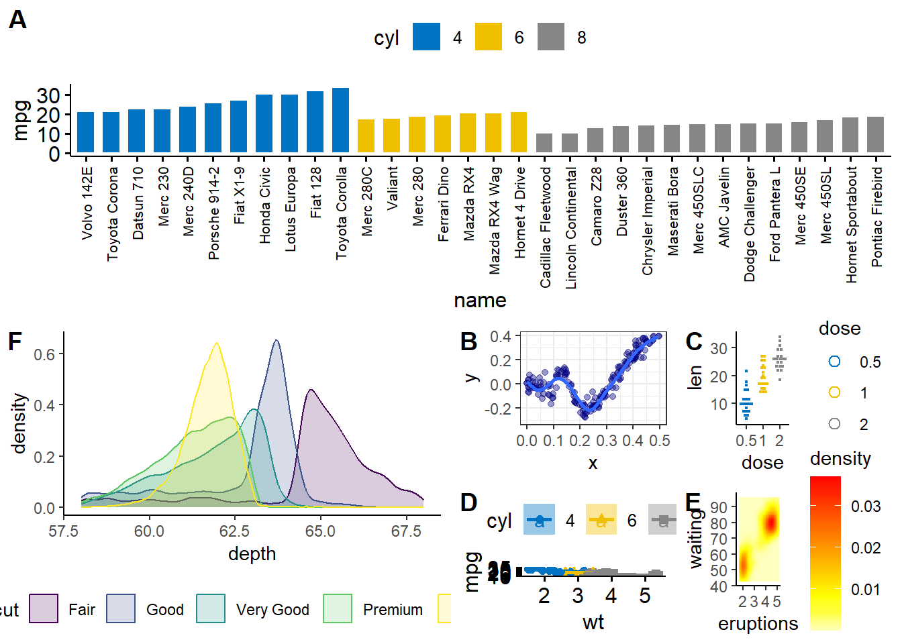
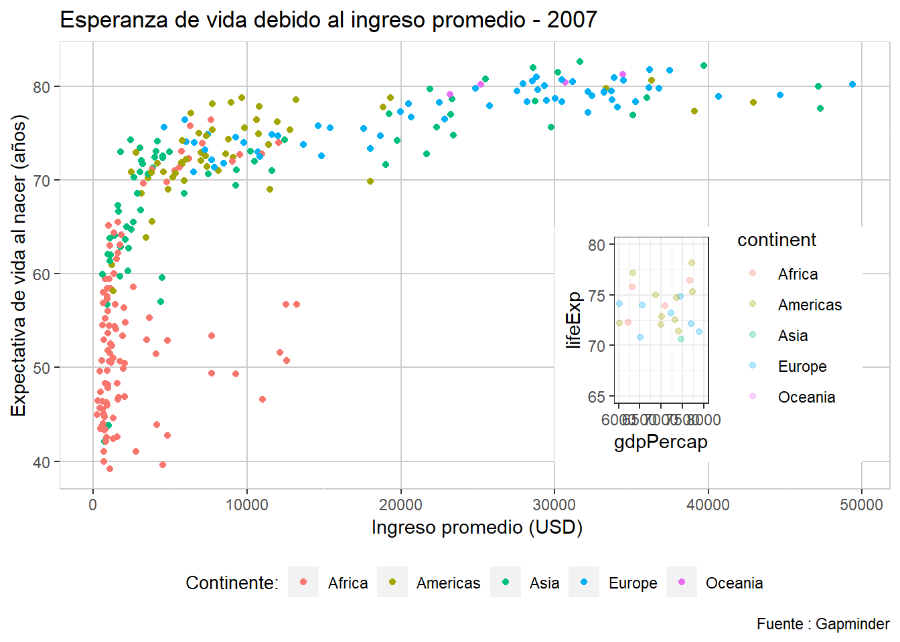

#install.packages("ggpubr")
library(ggpubr)Loading required package: ggplot2library(ggplot2)#install.packages("ggpubr")
library(ggpubr)Loading required package: ggplot2library(ggplot2)data("mtcars")
mtcars$name= row.names(mtcars)
mtcars$cyl= as.factor(mtcars$cyl)
a <-ggbarplot(mtcars, x = "name", y = "mpg", fill = "cyl",
color = "white", palette = "jco",
sort.val = "asc", sort.by.groups = TRUE,
x.text.angle = 90) + font("x.text", size = 8)
set.seed(42)
n <- 1000
x <- runif(n) * 3
y <- x * sin(1/x) + rnorm(n) / 25
df <- data.frame(x = x, y = y)
b <- ggplot(df, aes(x, y)) + geom_point(alpha = 0.4, col = "navyblue") +
geom_smooth(se = FALSE) + scale_x_continuous(limits = c(0, 0.5)) +
scale_y_continuous(limits = c(-0.3, 0.4)) + theme_bw()
c <- ggdotplot(ToothGrowth, x = "dose", y = "len",
color = "dose", palette = "jco", binwidth = 1)+ theme_classic()
d <- ggscatter(mtcars, x = "wt", y = "mpg", add = "reg.line", conf.int = TRUE,
color = "cyl", palette = "jco", shape = "cyl") +
stat_cor(aes(color = cyl), label.x.npc = "centre", label.y.npc="top")
e <-ggplot(faithfuld, aes(eruptions, waiting)) +
geom_raster(aes(fill = density)) + theme_classic() +
scale_fill_gradientn(colours = heat.colors(10, rev = TRUE), na.value = "white")
f <-ggplot(diamonds, aes(depth, fill = cut, colour = cut)) +
geom_density(alpha = 0.2, na.rm = TRUE) +
xlim(58, 68) + theme_classic() + theme(legend.position = "bottom")
replica <- ggarrange(a,ggarrange(f,nrow = 1,labels = 'F',ggarrange(b,c,d,e, nrow = 2, ncol = 2, labels = c('B','C','D','E'))),nrow= 2, labels ='A' )`geom_smooth()` using method = 'gam' and formula = 'y ~ s(x, bs = "cs")'Warning: Removed 819 rows containing non-finite values (`stat_smooth()`).Warning: Removed 819 rows containing missing values (`geom_point()`).Warning: Removed 1 rows containing missing values (`geom_smooth()`).replica
#install.packages("RCurl")
library(readr)
library(RCurl)
library(dplyr)
Attaching package: 'dplyr'The following objects are masked from 'package:stats':
filter, lagThe following objects are masked from 'package:base':
intersect, setdiff, setequal, unionlibrary(ggplot2)
library(ggpubr)
gapminder <- read.table(file = "Data/gapminder.csv", sep = ';', header = TRUE, stringsAsFactors = FALSE )
fig <- gapminder %>% filter(gapminder$year >= 2000 , gapminder$year <= 2007) %>% ggplot(aes(x= gdpPercap, y= lifeExp , color= continent)) + geom_point()+
labs(x = ' Ingreso promedio (USD)', y= 'Expectativa de vida al nacer (años)', title = "Esperanza de vida debido al ingreso promedio - 2007",
color= "Continente:",
caption = "Fuente : Gapminder")+
theme(legend.position = "bottom",
legend.title = element_text(colour = "black", size = 10),
panel.background = element_rect(fill = "white", colour = "grey80"),
panel.grid.major = element_line(colour = "grey80"))
fig2 <- gapminder %>% filter(gapminder$year >= 2000 , gapminder$year <= 2007) %>% ggplot(aes(x= gdpPercap, y= lifeExp, color= continent)) +
geom_point(alpha= 0.3)+ scale_x_continuous(limits = c(6000,8000))+ scale_y_continuous(limits = c(65,80)) + theme_bw()
fig + annotation_custom(ggplotGrob(fig2), xmin = 30000, xmax = 50000, ymin = 40, ymax = 65) Warning: Removed 262 rows containing missing values (`geom_point()`).